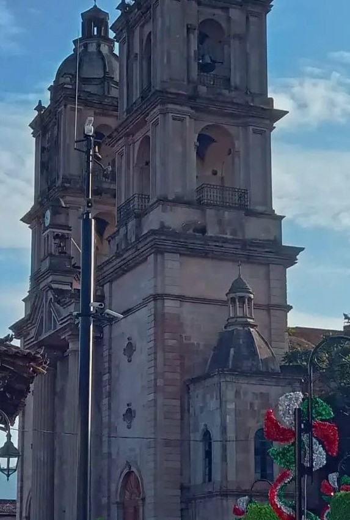
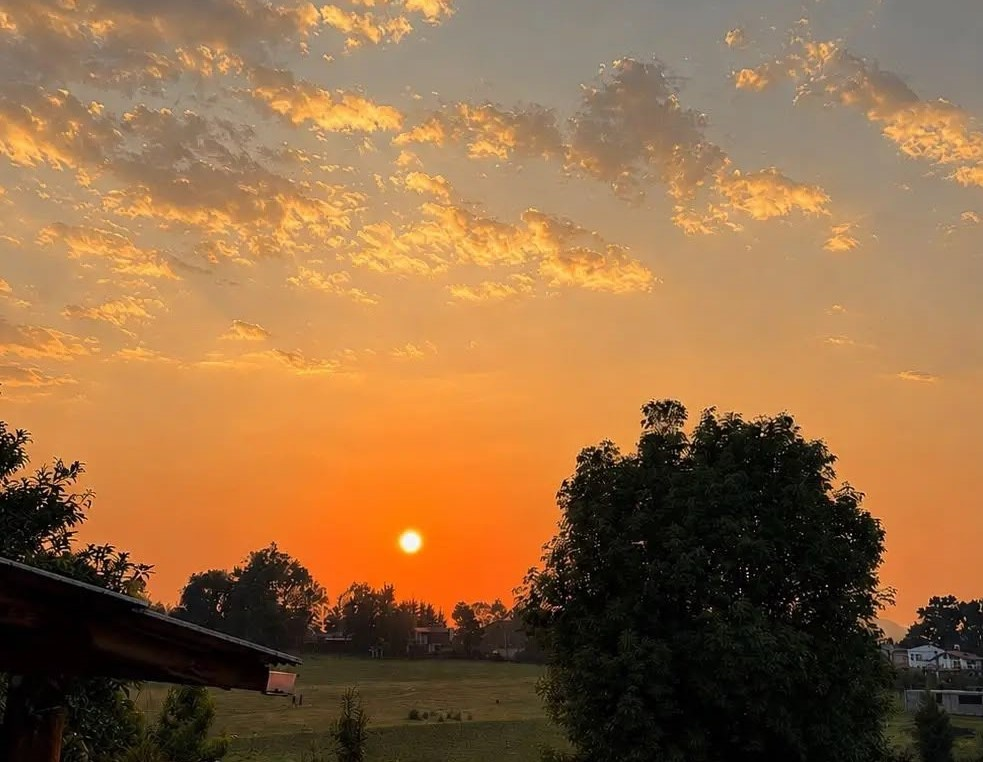
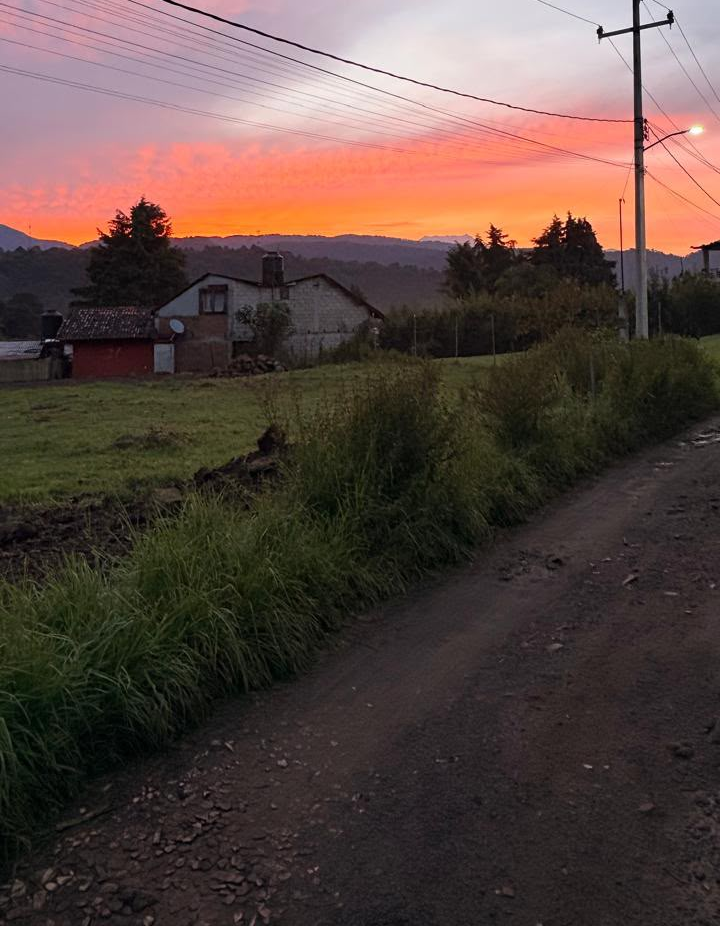
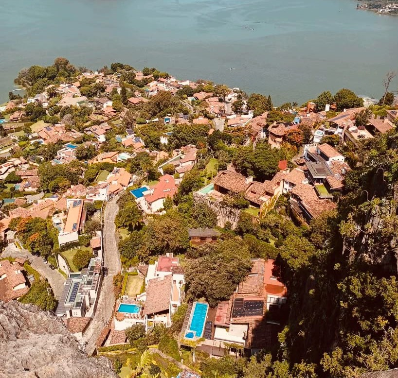
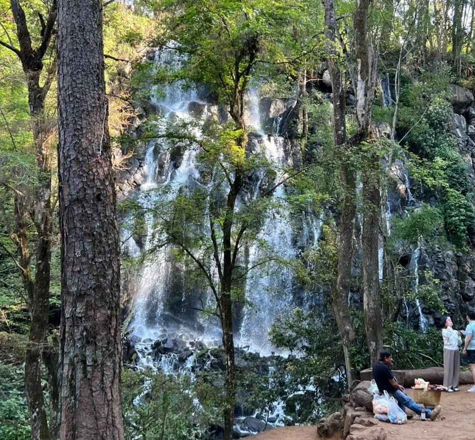

"Este lugar se encuentra en el Centro de valle
Ubicada en el corazón de Valle de Bravo, la Parroquia de San Francisco de Asís se erige como un pilar fundamental tanto para la comunidad local como para los visitantes. Este templo no es solo un centro de fe activa, sino también un monumento histórico y arquitectónico que atrae a creyentes y no creyentes por igual presencia imponente junto al Jardín Central la convierte en un punto de referencia ineludible y en el alma de este Pueblo Mágico.
La historia de la Parroquia de San Francisco de Asís es profunda y está intrínsecamente ligada al desarrollo de Valle de Bravo. Aunque la construcción principal que se observa hoy en día data en gran parte de finales del siglo XIX, iniciada alrededor de 1880, el templo conserva vestigios de su pasado franciscano mucho más antiguo. Uno de sus elementos más notables es una de sus torres, que se remonta al siglo XVI, un testimonio silencioso de los primeros días de la evangelización en la región. Esta combinación de estilos y épocas le confiere un carácter único, donde la sencillez de la orden franciscana original se fusiona con elementos posteriores.
"Este lugar se encuentra en Santa Maria Ahuacatlan, lugar mas conocido como el "Embarcadero" "
Como visitante de Valle de Bravo, mi experiencia con Letras YO AMO VALLE me dejó una impresión muy positiva y, sobre todo, memorable. Ubicada en Plaza Valle, De Manuel 24, esta atracción se destaca por su carácter accesible y su atmósfera amigable para toda la familia. A primera vista, la cercanía con el corazón del pueblo facilita que te pierdas entre calles pintorescas y vistas que invitan a explorar más.
Para familias o grupos que buscan una actividad atractiva en pleno Valle de Bravo, Letras YO AMO VALLE representa una opción ideal; combina cercanía, disponibilidad continua y un ambiente orientado a la diversión y el aprendizaje ligero.

"Este lugar esta ubicado en Palito Verde, Cuadrilla de Dolores."
Un atardecer observado desde una vivienda suele combinar elementos arquitectónicos, con el cielo en transición hacia la noche. Muchas imágenes muestran la mezcla entre interior y exterior: la luz dorada entrando por una ventana, el perfil de la casa recortado contra el cielo, o un patio iluminado por los últimos rayos del sol.
En lugares como Valle de Bravo, donde las montañas rodean el paisaje y el lago refleja el cielo, el atardecer adquiere una dimensión más amplia. El sol suele descender detrás de las laderas, creando un contraste entre la silueta oscura de los cerros y el cielo encendido.

"Este asombroso atardecer esta ubicado en Palito Verde, Cuadrilla de Dolores."
Es un momento en el que todo parece ralentizarse. La mezcla entre interior y exterior crea una atmósfera íntima: la casa protege, el paisaje invita, y el cielo transforma la escena en algo que se siente personal, aunque sea universal. Cada día es distinto: algunas tardes traen nubes que pintan el cielo con formas dramáticas; otras son limpias y dejan que el sol se despida con claridad.
En noviembre, la luz suele ser más oblicua y los colores más intensos, especialmente entre las 5:45 p.m. y las 7:00 p.m., cuando el sol baja con rapidez y el cielo se llena de matices. Un atardecer desde casa no solo es una imagen: es una experiencia que combina luz, espacio y emoción. Es el momento en que la casa se vuelve parte del paisaje y el paisaje entra en la casa, creando una escena que, aunque cotidiana, siempre tiene algo de extraordinario.

"Este lugar se encueentra en el mirador mejor conocido como "La Peña"
La Peña de Valle de Bravo es un mirador natural que ofrece vistas panorámicas de 360 grados del lago y el pueblo. Es un lugar de gran importancia histórica y cultural. La Peña fue habitada por los matlatzincas y es conocida por su legendaria Cueva del Diablo, que requiere equipo especializado para explorar. Además, es un punto de encuentro para grupos prehispánicos y un lugar de ceremonias rituales. La Peña también es un destino turístico popular, ideal para quienes buscan aventura y contacto con la naturaleza.
La Peña de Valle de Bravo es un enorme peñasco con vista al pueblo y al lago. Alcanza cerca de 3 mil metros sobre el nivel del mar, fue habitado desde la época prehispánica, hoy es uno de los puntos panorámicos más espectaculares de la zona.

"Este encantador lugar se encuentra en Avandaro aproximadamente a 25 minutos del centro de Valle de Bravo."
La Cascada Velo de Novia se encuentra en el Parque Velo de Novia en Valle de Bravo, México. Esta impresionante cascada mide 35 metros de altura y está rodeada de un bosque de pinos y encinos. Su nombre proviene de una leyenda que dice que una joven se lanzó por el despeñadero en un acto de dolor y vergüenza tras ser abandonada por su amante. El parque ofrece diversas actividades como senderismo, paseos a caballo y paseos en tirolesa, y es un lugar ideal para disfrutar de la naturaleza y realizar fotos memorables.
La cascada recibe su nombre porque la caída de agua parece un velo blanco. Según la tradición, una mujer abandonada en el altar se lanzó al despeñadero, y su historia quedó ligada al paisaje que hoy se conoce como Velo de Novia.